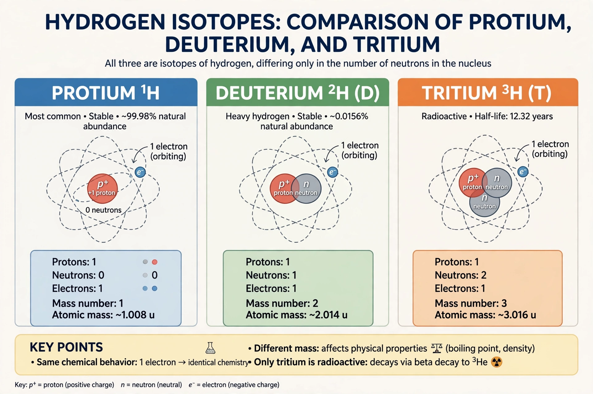

Deuterium
From Wikipedia, the free encyclopedia

Deuterium (symbol ²H or D) is a stable Isotope of Hydrogen whose nucleus, the deuteron, contains one proton and one neutron — twice the mass of ordinary hydrogen (protium). It constitutes about 0.0156% of natural hydrogen. Discovered by Harold Urey in 1931 (Nobel Prize 1934), deuterium is essential to nuclear fusion research, heavy-water reactors and tracer studies in chemistry and biology.
Properties and heavy water
Deuterium's doubled mass produces unusually large kinetic isotope effects, making it a sensitive probe of reaction mechanisms. Its oxide, heavy water (D₂O), is about 11% denser than ordinary water, with slightly higher melting (3.8 °C) and boiling points; in large quantities it is toxic to organisms because it slows mitosis and enzyme kinetics.
Nuclear applications
Deuterium moderates neutrons in CANDU reactors (as heavy water), letting them run on natural uranium. In fusion, deuterium–tritium reactions are the easiest to ignite — the fuel of ITER and of thermonuclear weapons, where lithium deuteride serves as a compact fusion fuel; deuterium also boosts fission weapons. Pure deuterium–deuterium fusion would tap a virtually inexhaustible fuel: about one in every 6,400 hydrogen atoms in seawater is deuterium.
Scientific uses
NMR spectroscopy uses deuterated solvents to avoid proton background; deuterium labelling traces metabolic pathways (and 'deuterated drugs' such as deutetrabenazine exploit slower metabolism). In cosmology, the primordial deuterium abundance — set in Big Bang nucleosynthesis — is a sensitive measure of the universe's baryon density.